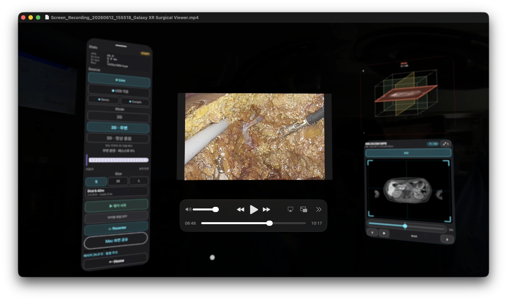

CV-190 streaming improvements
Early tests used smaller video frames to reduce live-streaming latency. Alongside frame rate adjustments, we improved compositing and transmission to preserve resolution. Below are the settings and measurements at each stage.
Vision Pro connection
Compared Half / Full SBS with CV-190·3DV-190 output
Galaxy XR connection
Single input from the CV-190·3DV-190 setup · Half SBS
Dual-input streaming test
Two CV-190 inputs · Half SBS · 30fps target
- Effective image per eye
- 640×360
- Average decoded rate
- 30.04fps
Frame rate target raised to 60fps
Half SBS · Same resolution per eye
- Effective image per eye
- 640×360
- Received rate in stable periods
- About 60fps
Full SBS · Sender downscaling removed
Transmit scale 1.0 · 60fps target
- Effective image per eye
- 1920×1080
- Average received rate
- 59.861fps
Settings for Full HD per eye
We changed the sender to preserve the 3840×1080 Full SBS composite. Selecting “Original resolution for two inputs” now applies Full SBS compositing and transmission without downscaling. The app also shows the expected frame size alongside the actual transmitted size.
We adjusted the bitrate and H.264 negotiation settings to accommodate the higher resolution.
| Metric | Value |
|---|---|
| Composite / transmitted resolution | 3840×1080 |
| Target / maximum transmit bitrate | 40 / 55Mbps |
| Measured average received bitrate | 36.870Mbps |
| Streaming codec | H.264 |
| Effective decoded image | 3840×1080 |
Measurements with Full SBS and a 60fps target
After applying Full SBS with a 60fps target, we analyzed Galaxy XR reception logs from the operating room.
October 29 · Full SBS settings
3840×1080 across both views
Reception recorded over 300.164 seconds
Feedback after wearing the headset was that both views displayed correctly and looked sharper than before. There was also a comment that blood vessels were easier to see.
Per-eye streaming resolution
- 640 × 3601×
- August 27 · Early streaming230,400 pixels
- 1280 × 7204×
- October 29 · Full SBS composite921,600 pixels
- 1920 × 10809×
- October 29 · Sender downscaling removed2,073,600 pixels
Mac transmission and Galaxy XR reception
These screenshots and footage are from the October 29 test. The Mac combined the left and right views into Full SBS, streamed the result, and Galaxy XR displayed it in 3D.
Mac · Full SBS transmission
 Photo 2
Photo 2Galaxy XR · 3D reception


Video received in Galaxy XR
Comparing resolution and streaming stability
We adjusted the transmitted frame size and bitrate on the Mac and used Galaxy XR reception logs to record the results of each setting.
In follow-up tests, we plan to compare sharpness at different resolutions using the same scene and XR display size. We will also measure interruptions during longer streams and latency from capture to XR display.